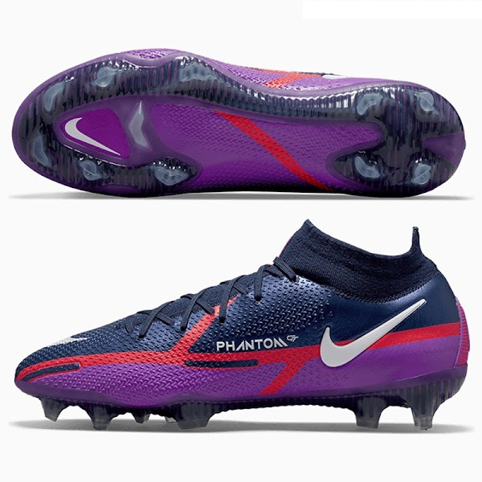

NIKE PHANTOM CLEATS
The Nike Hypervenom is a football boot manufactured by Nike. This type of boot is said to be for traction, power, and agility, designed for deceptive players. Therefore, it is endorsed/worn by players, notably forwards, such as Robert Lewandowski, Harry Kane, Edinson Cavani, Gonzalo Higuaín, Mauro Icardi and Thiago. In 2017, 18-year-old prodigy Kylian Mbappé was given his own personalised boots, Nike Hypervenom 3.
R2 499
24 pairs available in store now !